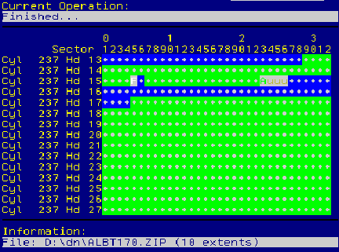

This article originally appeared in the March 1996 issue of Significant Bits, the monthly magazine of the Brisbug PC User Group Inc.
This month we start delving more deeply into HPFS' internal structures. Two REXX programs will be presented that will greatly assist you in the search for information. We will also briefly look at some other HPFS-related programs. Finally, you will see the Big Picture when the major structures of a HPFS partition are shown.
There are only three structures on High-Performance File System volumes that are always at the same location. The first structure is the BootBlock commencing at LSN (Logical Sector Number) 0 and extending up to LSN 15. (All LSNs in this article are in decimal). In current versions of OS/2 only LSN 0-5 are used. As well as the Disk Bootstrap program, the BootBlock holds important data such as the Volume Name, the volume serial number and the BIOS Parameter Block (BPB). For the purposes of this month's installment you only need to know that there is a dword stored at offset 1Ch in LSN 0 that specifies the number of "hidden" sectors on a volume. (Hidden sectors are sectors before LSN 0.) On every partition on my system, except for C:, and on all standard DOS partitions, all of the first track (track 0) is "hidden". In CHS (Cyl/Hd/Sec) notation, track 0 starts at 0/0/1 with LSN 0 starting on track 1 at 0/1/1. However on C: drive, an OS/2 bootable partition, LSN 0 does not commence until 1/0/1. On this particular hard disk this means that C: has 0800h (2,048) hidden sectors (1 MB) while all the other partitions have 0020h (32) hidden sectors. We will return to the topic of hidden sectors later.
The second structure with a standardised location is the SuperBlock. This is comprised of a single sector situated at LSN 16. Most of the data stored in this sector never changes. Important information is stored here such as the location of the Root Directory Fnode, location of the Directory Band and where to find the sector listing the partition's disk-usage bitmap sectors. Information that can change includes the last time CHKDSK /F was run on this partition, the last time an optimisation operation was performed and the number of bad sectors.
Figure 1 contains a table showing the layout of the SuperBlock. Last month it was stated that key HPFS structures were identified by dword (32-bit) signatures so that, in the event of a catastrophe, blind scanning could be used to find them again. But, in the case of the SuperBlock and the SpareBlock, quad-word signatures are provided. I don't know why the extra dword is supplied. The Function Version is the earliest version of HPFS that is needed to read this partition. User ID sectors appear to have something to do with ACL (Access Control Lists) which are used by LAN SERVER v4 and will normally be empty with standard OS/2.
Offset Data Size Comment
hex (dec) bytes
00h (1) Signature 8 F995E849h FA53E9C5h
08h (9) HPFS version 1
09h (10) Functional ver 1 2 (<=4GB), 3 (>4GB)
0Ah (11) Dummy 2 Reestablish 32-bit alignment.
0Ch (13) Root Dir Fnode 4 LSN pointer
10h (17) Secs in Partition 4
14h (21) Bad Sector Count 4
18h (25) List of Bitmap Secs 4 LSN pointer
1Ch (29) Bitmap SecList (spare) 4 0000h on my partitions
20h (33) List of Bad Sectors 4 LSN pointer
24h (37) Bad Sec List (spare) 4 0000h on my partitions
28h (41) CHKDSK /F Last Run 4 Seconds since 0:00 1-1-1970
2Ch (45) Last Optimised 4 Seconds since 0:00 1-1-1970
30h (49) Dir Band Sectors 4 LSN pointer
34h (53) Dir Band Start Sec 4 LSN pointer
38h (57) Dir Band End Sec 4 LSN pointer
3Ch (61) Dir Band Bitmap 4 LSN pointer
40h (65) Unused 32
60h (97) First UserID Sec 4 LSN pointer to beginning of
8 sec blk of ACLs.
Only used with HPFS386.
Fig. 1 The layout of the SuperBlock (LSN 16)
The final HPFS structure with a known location is the SpareBlock sector at LSN 17. Some of the data stored here will change depending on the status of the partition. Figure 2 shows its layout. The Partition Status byte is a bitmap that indicates various cautionary and fault-recovery conditions. On listed HPFS partitions, bit 0 of this byte is checked by the file system at start-up time. The check list is specified in the IFS line e.g. IFS=C:\OS2\HPFS.IFS /AUTOCHECK:CDFGH. If bit 0 is set then that particular partition was in a "dirty" state when the system was shutdown i.e. there was information in memory that had not been committed to the partition and/or all open files were not closed. A CHKDSK /F will automatically be performed to rebuild inconsistent HPFS structures.
Offset Data Size Comment
hex (dec) bytes
00h (1) Signature 8 F9911849h FA5229C5h
08h (9) Partition Status 1 Bit 7: Written by old IFS
Bit 5: FastFormatted Flag
Bit 4: Bad bitmap
Bit 3: Bad sector
Bit 2: Hotfix secs used
Bit 1: Spare DirBlks used
Bit 0: Dirty flag
09h (10) Dummy 3 Reestablish 32-bit alignment.
0Ch (13) HotFix List Start 4
10h (17) HotFix Entries Used 4
14h (21) Total HotFix Entries 4
18h (25) # Spare DirBlks 4
1Ch (29) Free Spare DirBlks 4
20h (33) Code Page Dir Sec 4
24h (37) # Code Pages 4
28h (41) SuperBlock CRC32 4 These Checksums are unused
2Ch (45) SpareBlock CRC32 4 except for HPFS386.
30h (49) 60 Space for 15 "Extra" dwords.
6Ch (109) First Spare DirBlk 4 First dword in a list in the
SpareBlock of all spare DirBlk
locations (each 4 secs).
Fig. 2 The layout of the SpareBlock (LSN 17)
Hotfixes are on-the-fly sector redirections that were made by the file system when a write fault is detected while committing data to a sector. The redirection is recorded in a dword pair in the Hotfix List's mapping table. The dword pair links the unreliable sector to the replacement sector. On a normal 100 MB partition there is a Hotfix List Block (4 sectors) mapping 100 Hotfix sectors (none of which is typically in use). I've never seen a hotfix occur (modern HDs are very reliable) but apparently a message appears on the screen indicating that a error occurred during a write operation and a hotfix has been performed to overcome the problem. Now you could have one or more hotfixes in the list for quite some time. The next time a CHKDSK /F is performed, one of the operations performed is to clear the Hotfix list with the unreliable sector marked in the BadSector list and the hotfix sector freed up again after the data in it is copied to a free sector in the main sector pool. Note: the sector will be located as close as possible to the original Fnode and the rest of the file's sectors.
HPFS386 automates the clearing of the Hotfix List. At start time it checks the stored 32-bit CRCs of the SuperBlock and of the SpareBlock and compares them with their current computed value. If these figures differ e.g. a hotfix was performed in the last session, then CHKDSK /F is run.
Another important item is the SpareBlock is the location and number of spare DirBlks. When a file is created, deleted or renamed, much extra activity can occur in the DirBlks as blocks are rearranged in the tree structure to maintain branch balance. There is a very small chance of running out of diskspace due to this activity. This is prevented by the availability of a number of spare DirBlks. On a 100 MB partition, 20 spare DirBlks (80 sectors) are located just after the end of the Dir Band. Their location is indicated by 20 dword pointers stored starting from offset 6Dh.
To assist you in investigating the operation and layout of HPFS we will now examine ShowSuperShare.cmd. First off, look at its screen output in Figure 3. For the purposes of illustration I've used the Graham Utilities' HPFS-Bad program to mark 1,000 sections on this partition as bad. The output takes up 35 lines on the screen. I usually operate in 43-61 line mode and have made no effort to cater for smaller windows. Anyway, its output is best redirected to the printer so it can be used as a guide for further investigation.
Inspecting drive O: SUPER BLOCK (LSN 16): Signature Qword: 0x00 0xF995E849 FA53E9C5 HPFS version: 0x08 2 Functional Version: 0x09 2 (<=4GB) Root Directory Fnode: 0x0C 0x00018810 (100368) Sectors in Partition: 0x10 0x00031FE0 (204,768) 102,384KB Bad Sector Count: 0x14 0x000003E8 (1,000) 500 Kb List of Bitmap Secs: 0x18 0x00018FF0 (102384) Bmp Sec list (spare): 0x1C 0x00000000 (0) List of Bad Sectors: 0x20 0x00018FF4 (102388) Bad Sec List (spare): 0x24 0x00000000 (0) CHKDSK /F Last Run: 0x28 0x313848D3 02-Mar-96 13:10:43 Last Optimised: 0x2C 0x00000000 (Never) Directory Band Secs: 0x30 0x000007BC (1,980) 990 Kb Dir Band Start Sec: 0x34 0x00018004 (98308) Dir Band End Sec: 0x38 0x000187BF (100287) Dir Band Bitmap: 0x3C 0x00017FF4 (98292) User ID secs (8 sec): 0x60 0x00018FF8 (102392) SPARE BLOCK (LSN 17): Signature Qword: 0x00 0xF9911849 FA5229C5 Partition Status: 0x08 0x20 (FastFmt, Clean) HotFix List Start: 0x0C 0x00000018 (24) HotFix Entries Used: 0x10 0x00000000 (0) Total HotFix Entries: 0x14 0x00000064 (100) # Spare DirBlks: 0x18 0x00000014 (20) Free Spare DirBlks: 0x1C 0x00000014 (20) Code Page Dir Sec: 0x20 0x00000080 (128) # Code Pages: 0x24 0x00000002 (2) SuperBlock CRC32: 0x28 0x68235198 SpareBlock CRC32: 0x2C 0xFBBDB294 First Spare DirBlk: 0x6D 0x000187C0 (100288) Last Spare DirBlk: 0xB9 0x0001880C (100364)Fig. 3 The output of the ShowSuperSpare.cmd program.
The contents of ShowSuperSpare.cmd is shown in Figure 4. This REXX program makes use of SECTOR.DLL (written by Thomas Christinck) and RXDATE.DLL (written by Barry Pederson). Both DLLs are Freeware.
001 /* Show LSN 16 & LSN 17 on a HPFS partition */
002 ARG drive .
003 IF drive = '' THEN CALL Help
004 IF WordPos(drive,'? /? /H HELP A: B:') \= 0 THEN CALL Help
005 CALL RxFuncAdd 'ReadSect','Sector','ReadSect' /*In SECTOR.DLL*/
006 CALL RxFuncAdd 'RxDate','RexxDate','RxDate' /*In REXXDATE.DLL*/
007 sectorString = ReadSect(drive, 16) /* SuperBlock is LSN 16 */
008 '@cls'
009 SAY
010 SAY "Inspecting drive" drive
011 SAY
012 SAY "SUPER BLOCK (sector 16):"
013 SAY " Signature Qword: 0x00 0x"FourChars2Hex(1) FourChars2Hex(5)
014 hpfsVer = Strip(C2X(Substr(sectorString,9,1)),'L','0')
015 SAY " HPFS version: 0x09 " hpfsVer
016 funcVer = Strip(C2X(Substr(sectorString,10,1)),'L','0')
017 SELECT
018 WHEN funcVer = "2" THEN dispStr = "2 (<=4GB)"
019 WHEN funcVer = "3" THEN dispStr = "3 (>4GB)"
020 OTHERWISE dispStr = ''
021 END
022 SAY " Functional Version: 0x0A " dispStr
023 CALL ShowDword "Root Directory Fnode",13
024 CALL ShowDwordPlusSize "Sectors in Partition",17
025 CALL ShowDwordPlusSize " Bad Sector Count",21
026 CALL ShowDword " List of Bitmap Secs",25
027 CALL ShowDword "Bmp Sec list (spare)",29
028 CALL ShowDword " List of Bad Sectors",33
029 CALL ShowDword "Bad Sec List (spare)",37
030 lastChkdskRun = FourChars2Hex(41)
031 dateTimeString = SubStr(sectorString,41,4)
032 CALL DecipherDateTime dateTimeString
033 SAY "CHKDSK/F Last Run: 0x29 0x"lastChkdskRun dateStr timeStr
034 lastOpt = FourChars2Hex(45)
035 dateTimeString = SubStr(sectorString,45,4)
036 CALL DecipherDateTime dateTimeString
037 SAY " Last Optimised: 0x2D 0x"lastOpt dateStr timeStr
038 CALL ShowDwordPlusSize " Directory Band Secs",49
039 CALL ShowDword " Dir Band Start Sec",53
040 CALL ShowDword " Dir Band End Sec",57
041 CALL ShowDword " Dir Band Bitmap",61
042 CALL ShowDword "User ID secs (8 sec)",97
043 SAY
044 sectorString = ReadSect(drive, 17) /* SpareBlock is LSN 17 */
045 SAY "SPARE BLOCK (sector 17):"
046 SAY " Signature Qword: 0x00 0x"FourChars2Hex(1) FourChars2Hex(5)
047 CALL ShowPartitionStatusFlags
048 CALL ShowDword " HotFix List Start",13
049 CALL ShowDword " HotFix Entries Used",17
050 CALL ShowDword "Total HotFix Entries",21
051 CALL ShowDword " # Spare DirBlks",25
052 CALL ShowDword " Free Spare DirBlks",29
053 CALL ShowDword " Code Page Dir Sec",33
054 CALL ShowDword " # Code Pages",37
055 SAY " SuperBlock CRC32: 0x29 0x"FourChars2Hex(41)
056 SAY " SpareBlock CRC32: 0x2D 0x"FourChars2Hex(45)
057 spareDirBlocks = C2D(Reverse(Substr(sectorString,25,4)))
058 CALL ShowDword " First Spare DirBlk",109
059 CALL ShowDword " Last Spare DirBlk",109+(4*(spareDirBlocks-1))
060 EXIT /******************EXECUTION ENDS HERE****************/
061 DriveInfo: /* Determine drive geometry */
062 PARSE VALUE QDrive(drive) WITH totalSec totalCyl totalHd, secPerTrk .
063 RETURN
064 FourChars2Hex:
065 ARG startPos
066 RETURN C2X(Reverse(Substr(sectorString,startPos,4)))
067 ShowDword:
068 PARSE ARG label, offset
069 hexStr = FourChars2Hex(offset)
070 SAY label": 0x"D2X(offset,2) " 0x"hexStr "("X2D(hexStr)")"
071 RETURN
072 ShowDwordPlusSize:
073 PARSE ARG label, offset
074 hexStr = FourChars2Hex(offset)
075 decStr = X2D(hexStr)
076 SAY label": 0x"D2X(offset,2) " 0x"hexStr "("WithCommas(decStr)"
)" WithCommas(decStr / 2) "KB"
077 RETURN
078 TwoChars2Hex:
079 ARG offset
080 RETURN C2X(Reverse(Substr(sectorString,offset,2)))
081 WithCommas:
082 ARG string
083 string = Format(string,,,,12)
084 strLen = Length(string)
085 IF strLen >= 4 THEN
086 string = Left(string, strLen-3)","Right(string,3)
087 ELSE
088 RETURN string
089 IF strLen >= 7 THEN
090 string = Left(string, strLen-6)","Right(string,7)
091 ELSE
092 RETURN string
093 IF strLen >= 10 THEN
094 string = Left(string, strLen-9)","Right(string,11)
095 RETURN string
096 DecipherDateTime:
097 ARG hexNum
098 num=C2D(Reverse(hexNum))
099 IF num = 0 THEN
100 DO
101 dateStr = "(Never)"
102 timeStr = ""
103 END
104 ELSE
105 DO
106 days = (num%86400) /* Int div to get whole days since 1970 */
107 remainderSecs = (num//86400) /* Mod div to get remainder.
108 This is # of secs in last (part) day. */
109 h = remainderSecs%3600 /* Whole hours in last day. */
110 /* Format(num,2) will ensure that if num is only single char
111 then a space will precede it. Since we can't force Format()
112 to use a leading 0 instead, use Translate(string,replacestr,
113 findstr) to fix this so mins & secs have leading zeros. */
114 /* Total whole mins in last day - mins in whole hours */
115 m = Translate(Format(remainderSecs%60 - h*60,2),"0"," ")
116 /* Take secs in whole mins & in whole hours
117 away from total last day secs */
118 s = Translate(Format(remainderSecs -h*3600 -m*60,2),"0"," ")
119 /* We're going to use RXDATE20.xxx by Barry Pederson to
120 work out the date. It will convert # of days since
121 1/1/0001 to a formatted date. Add 719162 to days count
122 to adapt 0s/2's 1970-based counting to this. */
123 days = days + 719162
124 dateStr = rxDate(days,'%d-%b-%y')
125 timeStr = h':'m':'s
126 END
127 RETURN
128 ShowPartitionStatusFlags:
129 byte = Substr(sectorString,9,1)
130 IF BitAnd(byte, '1'x) = '1'x THEN
131 status = 'Dirty'
132 ELSE
133 status = 'Clean'
134 IF BitAnd(byte,'02'x) = '02'x THEN status='SpareUsed,' status
135 IF BitAnd(byte,'04'x) = '04'x THEN status='Hotfix,' status
136 IF BitAnd(byte,'08'x) = '08'x THEN status='BadSec,' status
137 IF BitAnd(byte,'10'x) = '10'x THEN status='BadBmp,' status
138 IF BitAnd(byte,'20'x) = '20'x THEN status='FastFmt,' status
139 IF BitAnd(byte,'80'x) = '80'x THEN status='OldVer,' status
140 SAY ' Partition Status: 0x08 0x'C2X(byte) ' ('status')'
141 RETURN
142 Help:
143 SAY
144 SAY
145 SAY "Purpose:"
146 SAY " ShowSuperSpare Decodes the SuperBlock & SpaceBlock"
147 SAY " sectors on a HPFS partition"
148 SAY
149 SAY "Example:"
150 SAY " ShowSuperSpare C:"
151 SAY
152 EXIT
Fig. 4 ShowSuperSpare.cmd. Don't include line numbers. Ensure that a comment
of some sort in in row1, col1.
The design of the program is very straightforward and deserves only a little further comment. Line 4 uses an unusual method to check for a help invocation parameter. "sectorString" is generic name used in this program for either the contents of the SuperBlock sector (LSN 16) or the SpareBlock sector (LSN 17). Lines ending in a comma are treated by the REXX interpreter as continuing on the next line. Unfortunately you can't do this in a SAY line so indented lines without line numbers are a continuation of the previous SAY line and should be typed in as one long line.
There are a number of programs that are useful for HPFS investigation but they use different addressing methods. The Graham Utilities has HPFInfo (decimal LSN and CHS - Cyl/Hd/Sec), HPFSView (CHS) and Diskedit (CHS). The GammaTech Utilities has Sedit (hex LSN). FST (File System Tool - written by Eberhard Mattes) uses decimal LSN. And SECTOR.DLL is driven using decimal LSN. Furthermore, when you look at a hex dump of a sector, the 32-bit values require a bit of mental gymnastics to interpret. For example, the sequence "12 34 56 78" in a dump represents 0x78563412.
To cope with the variety of different addressing methods I've designed the REXX sector dumping program SEC.CMD to handle four different methods, namely:
1. Decimal LSN - SEC C: 123 2. Hex LSN - SEC C: 0x123 3. My "Custom" Dword LSN - SEC C: 0y 12 3 0 1 = 0x01000312 4. CHS physical addressing - SEC C: 12/8/3 = Cyl 12, Hd 8, Sec 3
Originally I had a complex IF structure to determine which form of addressing was specified. Mark Hessling suggested that I use the powerful and little understood features of the PARSE instruction to perform much of this work. We constructed a parsing testbed and then threw it a number of command lines to see what would come out. See Figures 5 & 6.
01 /* A testbed for the parsing section of SEC.CMD
02 The following command line, split into 4 lines
03 for clarity, performs 4 passes.
04 */
05 PARSE ARG drive dec .,
06 1 '0x' hex .,
07 1 '0y' y1 y2 y3 y4 .,
08 1 . cyl '/' hd '/' sec .
09 IF drive = '' | dec = '' THEN CALL Help
10 CALL Show 'Drive' drive
11 CALL Show 'Dec' dec
12 CALL Show 'Hex' hex
13 CALL Show 'Y1' y1
14 CALL Show 'Y2' y2
15 CALL Show 'Y3' y3
16 CALL Show 'Y4' y4
17 CALL Show 'Cyl' cyl
18 CALL Show 'Head' hd
19 CALL Show 'Sec' sec
20 SAY
21 SAY 'Output:'
22 IF hex = '' & y1 = '' & hd = '' & sec = '' THEN SAY 'SEC' drive dec
23 IF hex \= '' THEN SAY 'SEC' drive '0x'hex
24 IF Y1 \= '' THEN
25 DO
26 y = Right('00'y4,2)||Right('00'y3,2)||Right('00'y2,2)||Right('00'y1,2)
27 SAY 'SEC' drive '0x'y
28 END
29 IF sec \= '' THEN SAY 'SEC' drive 'cyl'cyl||' hd'hd||', sec'sec
30 EXIT /************ END OF PROGRAM ************/
31 Show:
32 PARSE ARG label aa
33 SAY label '<'aa'>'
34 RETURN
35 Help:
36 SAY
37 SAY "In Help Section"
38 SAY
39 EXIT
Fig.5 TEST.CMD examines commandline parsing
[d:\]test c: 123 [d:\]test c: 0x 123 [d:\]test c: 0x123 Drive <c:> Drive <c:> Drive <c:> Dec <123> Dec <0x> Dec <0x123> Hex <> Hex <123> Hex <123> Y1 <> Y1 <> Y1 <> Y2 <> Y2 <> Y2 <> Y3 <> Y3 <> Y3 <> Y4 <> Y4 <> Y4 <> Cyl <123> Cyl <0x 123> Cyl <0x123> Head <> Head <> Head <> Sec <> Sec <> Sec <> Output: Output: Output: SEC c: 123 SEC c: 0x123 SEC c: 0x123 [d:\]test c: 0y12 3 [d:\]test c: 0y 12 34 0 7 [d:\]test c: 1/2/3 Drive <c:> Drive <c:> Drive <c:> Dec <0y12> Dec <0y> Dec <1/2/3> Hex <> Hex <> Hex <> Y1 <12> Y1 <12> Y1 <> Y2 <3> Y2 <34> Y2 <> Y3 <> Y3 <0> Y3 <> Y4 <> Y4 <7> Y4 <> Cyl <0y12 3> Cyl <0y 12 34 0 7> Cyl <1> Head <> Head <> Head <2> Sec <> Sec <> Sec <3> Output: Output: Output: SEC c: 0x0000312 SEC c: 0x07003412 SEC c: cyl1, hd2, sec3Fig.6 Results of running the parsing testbed shown in Fig.5
Here is how to interpret the first pass (line5): 1. The first parm is drive. The second parm (after any white space) is dec. The rest of the line, if any, is discarded.
Now the second pass (line 6): 2. Reset parsing start point to the first character. Look forward for '0x'. If found, take the next word (after any whitespace) and assign it to hex. Discard the rest of line.
The third pass (line 7): 3. Reset parsing point to the first character. Look for '0y'. If found, assign the next 4 words, if present, to y1 through y4. Discard the rest of the line.
The final pass (line 8): 4. Reset parsing point to first char. Throw away first parm ("C:"). Next parm becomes cyl up to the first slash. After the first slash until the second slash, any characters become hd. Any characters, after the second slash up until the next whitespace becomes sec. Discard the rest of the line.
In the simple usage above, the starting point must be 1 since it is acting as a stop point for the preceding section as well. If it is 1 then PARSE seems to take the whole line otherwise, in "PARSE ARG drive dec . 2...", drive ends up as just "C" (no colon) and dec is empty. If you want to restart from a different point then you have to use a more explicit form of positional patterning. For example, character 4 would be a good restarting point since the second parm can not start any earlier. (Note: character counting is zero-based since character 1 can never be immediately after the REXX program name but must be separated from it by a space.) So this could be restated as:
PARSE ARG drive dec . 254,
4 '0x' hex . 254,
4 '0y' y1 y2 y3 y4 . 254,
4 . cyl '/' hd '/' sec .
Don't worry too much about performance considerations either. 10,000 iterations of the above command on a 486DX/50 took only 3.5 seconds meaning that a single four-pass run takes only 350 microseconds! Another important point: all leading and trail white space is stripped off assigned variables except for the last variable. So, if you want the last variable to be trimmed as well, ensure that you have a dot at the end of a run's assignment pattern. I noticed in the CHS example that surrounding spaces were preserved for the hd variable only. I presume this is because it is surrounded by slashes. You can also use relative repositioning e.g. +2 or -2.
One further parsing alteration is needed for the SEC program, namely the inclusion of the UPPER keyword in the PARSE instruction. This is so both "0X123" and "0x123" are accepted.
Figure 7 shows the display produced by SEC.CMD. The sector being dumped is part of the Directory Band on D: . Regardless of the addressing format used, all three formats are shown along with the maximum CHS figure for this partition. This makes the program handy for cross-referencing purposes. Figure 8 shows three out-of-range error messages and also shows the Help Screen being invoked in response to the lack of the first parameter (drive).
LSN 393384 (0x000600A8) on D: Cyl:192, Hd: 6, Sec:9 (Max CHS: 399/63/32)
0000 AE 0A E4 77 58 05 00 00-10 00 00 00 AC 00 06 00 ...wX...........
0010 A8 00 06 00 28 00 00 40-95 16 03 00 5A FD 85 2F ....(..@....Z../
0020 00 00 00 00 5A FD 85 2F-5A FD 85 2F 00 00 00 00 ....Z../Z../....
0030 00 00 09 4E 6F 74 65 4D-65 73 67 73 28 00 00 00 ...NoteMesgs(...
0040 96 16 03 00 C8 DA F3 2E-1D 00 00 00 A4 18 E4 30 ...............0
0050 54 EE 85 2F 1A 01 00 00-00 00 09 70 61 73 74 65 T../.......paste
0060 2E 6D 61 63 2C 00 00 00-98 16 03 00 B2 F3 85 2F .mac,........../
0070 00 00 00 00 B2 F3 85 2F-B2 F3 85 2F 00 00 00 00 ......./.../....
0080 00 00 0A 50 4D 41 6E 73-69 2E 45 72 72 00 00 00 ...PMAnsi.Err...
0090 2C 00 00 00 99 16 03 00-7C FA 2A 2F 78 34 00 00 ,.......|.*/x4..
00A0 B5 51 EC 30 54 EE 85 2F-B8 09 00 00 00 00 0A 70 .Q.0T../.......p
00B0 6D 61 6E 73 69 2E 65 78-65 00 00 00 2C 00 00 00 mansi.exe...,...
00C0 BA 16 03 00 8E F4 85 2F-21 07 00 00 A4 18 E4 30 ......./!......0
00D0 BE EE 85 2F 00 00 00 00-00 00 0C 50 4D 53 65 72 .../.......PMSer
00E0 69 61 6C 2E 45 72 72 00-2C 00 00 00 BF 16 03 00 ial.Err.,.......
00F0 5E FA 2A 2F 69 2D 00 00-B5 51 EC 30 54 EE 85 2F ^.*/i-...Q.0T../
0100 B8 09 00 00 00 00 0B 70-6D 76 74 31 30 30 2E 65 .......pmvt100.e
0110 78 65 00 00 28 00 00 00-DC 16 03 00 E4 AC 17 2F xe..(........../
0120 7B 22 00 00 A4 18 E4 30-54 EE 85 2F 00 00 00 00 {".....0T../....
0130 00 00 06 72 65 61 64 6D-65 00 00 00 2C 00 00 00 ...readme...,...
0140 EF 16 03 00 BC A4 2C 2F-06 05 00 00 A4 18 E4 30 ......,/.......0
0150 56 EE 85 2F 00 00 00 00-00 00 0C 72 65 67 69 73 V../.......regis
0160 74 65 72 2E 74 78 74 00-2C 00 00 00 F3 16 03 00 ter.txt.,.......
0170 B0 F8 2A 2F 15 87 00 00-A4 18 E4 30 54 EE 85 2F ..*/.......0T../
0180 00 00 00 00 00 00 0B 72-65 78 78 69 6E 74 2E 64 .......rexxint.d
0190 6C 6C 00 00 28 00 00 10-74 3F 01 00 46 DA DA 30 ll..(...t?..F..0
01A0 00 00 00 00 46 DA DA 30-46 DA DA 30 00 00 00 00 ....F..0F..0....
01B0 00 00 06 73 63 72 69 70-74 00 00 00 2C 00 00 00 ...script...,...
01C0 3C 17 03 00 96 F8 2A 2F-55 26 00 00 A4 18 E4 30 <.....*/U&.....0
01D0 54 EE 85 2F 00 00 00 00-00 00 0B 73 74 61 74 77 T../.......statw
01E0 69 6E 2E 64 6C 6C 00 00-2C 00 00 00 51 17 03 00 in.dll..,...Q...
01F0 F6 F7 2A 2F D5 14 00 00-A4 18 E4 30 54 EE 85 2F ..*/.......0T../
Fig.7 The display produced by SEC.CMD
[d:\]sec d: 1234567
Requested sector is greater than the maximum LSN of this volume (819167)
[d:\]sec d: 1/63/35
Requested C/H/S is greater than the geometry of D: (399/63/32)
[d:\]sec d: 0/0/6
Requested C/H/S is below LSN 0 which starts at: 0/1/1
[d:\]sec 0/1/1
Purpose:
SEC dumps disk sectors to STDOUT
Usage:
SEC drive logical_sector_number in decimal,
hex (0x) or dump style (0y)
or
SEC drive Cyl/Hd/Sec
Examples:
SEC C: 1015
SEC C: 0x3F7
SEC C: 0yF7 03 01 or 0yF7 3 1 or 0y F7 3 1 0 = 0x000103F7
SEC C: 2/14/5
Notes:
LSN, Cyl & Hd are zero-based while Sec is one-based.
LSN, being a logical numbering scheme, does not include the hidden
sectors before the logical boot sector (LSN 0).
Fig.8 Error messages produced by SEC.CMD. Also shown is the invocation of the
Help screen through the lack of a drive paramater.
The SEC.CMD program is listed in Figure 9. Again the program's operation is fairly straightforward. If you compare this program with the FILEDUMP.CMD program presented in The Joy Of REXX, SigBits, Sept 95 you can see that the display of the hex character is achieved using completely different methods. SEC follows a more traditional approach which I've used for variety and also because I wanted to put a dash halfway along the row. In the lines 41-57 section the Charout() function is used rather than SAY so as to control when a carriage return occurs. The program accounts for the different number of hidden sectors on a boot partition compared to other partitions and the effect these have on the physical location of LSN 0.
001 /* Shows a sector based on Drive and either LSN or C/H/S */
002 PARSE UPPER ARG drive lsn . 1 '0X' hex . 1 '0Y' y1 y2 y3 y4 .,
003 1 . cyl '/' hd '/' sec . /* Parse parm line 4 times */
004 /* There must be at least two parms supplied */
005 IF drive = '' | lsn = '' THEN CALL HELP
006 /* Only parm supplied was for help */
007 IF WordPos(drive,"? /? /H HELP") \= 0 THEN CALL Help
008 /* Register external functions */
009 CALL RxFuncAdd 'QDrive','sector','QDrive'
010 CALL RxFuncAdd 'ReadSect','sector','ReadSect'
011 CALL DriveInfo /* Determine drive geometry */
012 secPerCyl = (totalHd + 1) * secPerTrk
013 /* Adjust for presence of other secs before LSN 0 */
014 lsnStartPos = GetHiddenSecs()
015 SELECT
016 WHEN hex='' & y1='' & hd='' & sec='' THEN /* Dec LSN format */
017 CALL WithLSN
018 WHEN hex \= '' THEN /* 0x hex format */
019 DO
020 lsn = X2D(hex)
021 CALL WithLSN
022 END
023 WHEN Y1 \= '' THEN /* 0y hex format */
024 DO
025 lsn = X2D(Right('00'y4,2)||Right('00'y3,2)||,
026 Right('00'y2,2)||Right('00'y1,2))
027 CALL WithLSN
028 END
029 WHEN sec \= '' THEN /* C/H/S format */
030 DO
031 CALL WithCHS
032 CALL CheckForNegativeLSN
033 END
034 OTHERWISE CALL Help
035 END
036 '@cls'
037 SAY "LSN" lsn "(0x"D2X(lsn,8)") on" drive " Cyl:"cyl", Hd:
"hd", Sec:"sec " (Max CHS:" totalCyl"/"totalHd"/"secPerTrk")"
038 SAY
039 sec = ReadSect(drive,lsn) /* Read in required sector */
040 /* Display the sector */
041 DO paraBoundary = 0 TO 511 BY 16
042 /* Display hex char & a space */
043 CALL Charout, D2X(paraBoundary,4)" "
044 DO offset = 1 TO 16
045 IF offset \= 9 THEN
CALL Charout, " "C2X(Substr(sec,paraBoundary+offset,1))
047 ELSE /* Put a dash between hex bytes 7 & 8 */
CALL Charout, "-"C2X(Substr(sec,paraBoundary+offset,1))
049 END offset
050 CALL Charout, " " /* 3 spaces between hex & ASCII */
051 DO offset=1 TO 16 /* Display the printable ASCII chars */
052 char = Substr(sec,paraBoundary+offset,1)
053 IF char < " " | char > "~" THEN
054 CALL Charout, "." /* Swap non-print char for a dot */
055 ELSE
056 CALL Charout, char
057 END offset
058 SAY /* Start a new line */
059 END paraBoundary
060 EXIT /****************EXECUTION ENDS HERE****************/
061 DriveInfo: /* Determine drive geometry */
062 PARSE VALUE QDrive(drive) WITH totalSec totalCyl totalHd secPerTrk .
063 totalCyl = totalCyl - 1
064 totalHd = totalHd - 1
065 RETURN
066 GetHiddenSecs: /* Given Drive, return dec value of Dword */
067 /* Num of hidden secs is specified in the logical boot sec
068 (LSN 0) in the dword stored at offset 29 decimal.
069 This region is part of the BPB (BIOS Parameter Block) */
070 logicalBootSec = ReadSect(drive, 0)
071 hiddenSecs = Reverse(Substr(logicalBootSec,29,4))
072 RETURN C2D(hiddenSecs)
073 WithCHS: /* Given CHS, determine LSN */
074 IF dec < 1 THEN CALL ShowErrMsg "Physical sector numbering starts from 1"
075 IF cyl < 0 THEN CALL ShowErrMsg "Cylinder numbering starts from 0"
076 IF cyl > totalCyl | hd > totalHd | sec > secPerTrk THEN
077 DO
078 SAY
079 SAY "Requested C/H/S is greater than geometry of" drive
"("TotalCyl"/"TotalHd"/"secPerTrk")"
080 EXIT
081 END
082 IF hd<0 THEN CALL ShowErrMsg "Head numbering starts from 0"
083 /* Work out LSN, given Cyl, Hds, Sec */
084 lsn = cyl * secPerCyl
085 lsn = lsn + (hd * secPerTrk)
086 lsn = lsn + sec
087 lsn = lsn - lsnStartPos - 1 /* LSN is zero-based */
088 RETURN
089 ShowErrMsg:
090 ARG errMsg
091 SAY
092 SAY errMsg
093 EXIT
094 CheckForNegativeLSN:
095 /* Neg LSN will occur if specified CHS is in hidden area */
096 IF lsn < 0 THEN
097 DO
098 lsn = 0
099 CALL WithLSN
100 displayString = cyl"/"hd"/"sec
101 SAY
102 SAY "Requested C/H/S is below LSN 0 which starts at:" displayString
103 EXIT
104 END
105 RETURN
106 WithLSN: /* Given LSN, determine CHS */
107 sec = lsn + lsnStartPos
108 IF lsn + 1 > totalSec THEN /* LSN is zero-based */
109 DO
110 SAY
111 SAY "Requested sector is greater than the maximum LSN"
112 SAY "of this volume ("totalSec-1")"
113 SAY
114 EXIT
115 END
116 cyl = sec % secPerCyl /* Determine cyl value */
117 sec = sec - (Cyl*secPerCyl) /* Determine remainder secs */
118 hd = (sec % secPerTrk) // (totalHd+1) /* Determine hd */
119 sec = sec - (hd*secPerTrk)+1 /* Determine sec value */
120 RETURN
121 Help:
122 SAY
123 SAY "Purpose:"
124 SAY " SEC dumps disk sectors to STDOUT"
125 SAY
126 SAY "Usage:"
127 SAY " SEC drive logical_sector_number in decimal, hex (0x)
or dump style (0y)"
128 SAY " or"
129 SAY " SEC drive Cyl/Hd/Sec"
130 SAY
131 SAY "Examples:"
132 SAY " SEC C: 1015"
133 SAY " SEC C: 0x3F7"
134 SAY " SEC C: 0yF7 03 01 or 0yF7 3 1 or 0y F7 3 1 0 = 0x000103F7"
135 SAY " SEC C: 2/14/5"
136 SAY
137 SAY "Notes:"
138 SAY " LSN, Cyl & Hd are zero-based while Sec is one-based."
139 SAY " LSN, being a logical numbering scheme, does not include"
140 SAY " the hidden secs before the logical boot sec (LSN 0)."
141 EXIT
Fig. 9 The SEC.CMD sector dumping program.
ShowSuperSpare.cmd and SEC.CMD provide a good basis on which to launch an investigation into HPFS' structure. But other programs ease the task considerably. Let's see some examples of their output. Figure 10 shows how the GammaTech Utilities' Sedit displays the contents of a file's Fnode sector. It can also display this data in a raw hex format. This file has 10 fragments. (It was download by a DOS comms package which negated HPFS anti-fragmentation strategies.) A very nice feature is that a highlight bar can be tabbed between valid dword pointer addresses on the screen. If you then press Enter you teleport to that location. The screen has two sizes: 25 and 41 rows. The later size is much more convenient since a complete sector's contents can be displayed without scrolling.
HPFS F-Node Signature: ..................... F7E40AAE Length of Full Name: ........... 0B Name (Max 15 ASCII Characters): ALBT170.ZIP Directory F-Node Pointer: ...... 0005C327 Flag: .......................... 00 File Data Length: ................... 0008AB64 Allocation Pointers: FFFFFFFF 000769D6 000349CC 000000CD 00000029 000763F9 000000F6 00000069 0007661A 0000015F 00000014 000766C9 00000173 0000001B 0007671B 0000018E 00000033 0007673F 000001C1 000000C7 0007680E 00000288 00000028 0007699C Path: \DN\ALBT170.ZIP Format: HPFS ESC=Menu F1=Help D: Sector: 000349CBFigure 10: FNODE display from the GammaTech Utilities' Sedit. Highlight bar is on the LSN of the second extent (of 10). The first extent starts at 000349CCh so there is quite a distance between these two extents. The remainder of the extents are close to the second extent. Press Enter on any highlighted address switches to show that location.
Figure 11 shows the display of the Graham Utilities' HPFSView. The screen resizes in response to the mode setting. The display is colour and symbol coded and a legend is shown when F1 is pressed. When you click on a sector all other sectors associated with it are highlighted and the name of the structure is given. In this diagram three of the file's 10 extents (the large green areas) are shown. The intervening "F" and the light sector just after it are another file's Fnode and its first extent. The dark "A" represents ALBT170.ZIP's Anode, with the next 3 "u" sectors being unallocated (free). Since ALBT170.ZIP has more than 8 extents its layout can not be described within its Fnode so an Anode is used. Note: HPFSView is also available in the demo version of the GU's, GULITE.ZIP.

Fig.11 Graphical display of The Graham Utilities' HPFSView. Shown are the 2nd, 3rd and start of the 4th extent (in green). Also shown is the file's ALNODE ("A") due to there being more than 8 extents.
DiskEdit (also from the GUs) looks like a typical sector editor until you actually enter Edit mode. If you do so while situated on a HPFS structure then the display becomes much more interesting, as shown in figure 12. Here part of ALBT170.ZIP's Fnode is shown. (Pressing Down Arrow brings up the remainder). As you move the cursor down through the data fields the description changes at the bottom.
HPFS Disk D: Cylinder 105 Head 15 Sector 12 FNODE No Mask Offset 000 .sig :f7e40aae .ulSRHist :0 .ulFRHist :0 .achName[0] (name length):11 .achName[1] (name itself):ALBT170.ZIP .lsnContDir :377639 (Cyl= 184 Head=26 Sector= 8) .aiACL.sp.cbRun :0 .aiACL.sp.lsn :0 (Cyl= 0 Head= 1 Sector= 1) .aiACL.usFNL :0 .aiACL.bDat :0 .cHistBits :0 .aiEA.sp.cbRun :0 .aiEA.sp.lsn :0 (Cyl= 0 Head= 1 Sector= 1) .aiEA.usFNL :0 .aiEA.bDat :0 .bFlag :0 .fst.alb.bFlag :80 .fst.alb.bPad :000000 .fst.alb.cFree :11 .fst.alb.cUsed :1 .fst.alb.oFree :16 .fst.a.aaln[0].lsnLog :4294967295 .fst.a.aaln[0].lsnPhys :485846 (Cyl= 237 Head=15 Sector=23) .fst.a.aaln[1].lsnLog :215500 .fst.a.aaln[1].lsnPhys :205 (Cyl= 0 Head= 7 Sector=14) .fst.a.aaln[2].lsnLog :41 .fst.a.aaln[2].lsnPhys :484345 (Cyl= 236 Head=32 Sector=26) .fst.a.aaln[3].lsnLog :246 .fst.a.aaln[3].lsnPhys :105 (Cyl= 0 Head= 4 Sector=10) This is the signature for the FNODE. It should be F7E40AAE.Fig.12 The Graham Utilities' DiskEdit FNODE editing screen output.
Finally, the output of the freeware FST in info mode is shown in Figure 13. After examining FST's included C source code it is evident that both FST and GU's DiskEdit use the same field names so I suspect that both authors have had access to the same detailed HPFS structural information. (I've not been able to find out yet where they got it from.)
[d:\]fst info d: \dn\albt170.zip Directory entry 8 of DIRBLK 394788+0 (394788) Length: 44 Flags: 0x00 Attributes: 0x20 arch FNODE: 215499 Time of creation: 0x3114b500 (1996-02-04 13:30:40) Time of last modification: 0x2fcefa76 (1995-06-02 11:48:06) Time of last access: 0x3115342c (1996-02-04 22:33:16) Size of file: 568164 Size of extended attributes: 0 Number of ACEs: 0 Code page: 437 FNODE: 215499 Flags: 0x00 Size of file: 568164 Number of `need' EAs: 0 Offset of first ACE: 196 ACL size in FNODE: 0 External ACL size: 0 Node count: 1 ALSEC(.0): 485846 Leaf count: 10 File data in 205 sectors 215500-215704 (file sector 0) File data in 41 sectors 484345-484385 (file sector 205) File data in 105 sectors 484890-484994 (file sector 246) File data in 20 sectors 485065-485084 (file sector 351) File data in 27 sectors 485147-485173 (file sector 371) File data in 51 sectors 485183-485233 (file sector 398) File data in 199 sectors 485390-485588 (file sector 449) File data in 40 sectors 485788-485827 (file sector 648) File data in 16 sectors 485830-485845 (file sector 688) File data in 406 sectors 485892-486297 (file sector 704) Allocation tree height: 1 Number of sectors: 1110 Number of extents: 10Fig. 13 FST 's info display of a file's DIRBLK, FNODE and ALSEC (Anode) contents.
When dealing with something as complex as HPFS it helps if you can get an overall idea of the layout of the partition. Figure 14 shows the layout of an empty 100 MB volume.
LSN Name Size
Secs
0 BootBlock 16
16 SuperBlock 1
17 SpareBlock 1
18 Marked "allocated" 2
20 Bitmap #1 4
24 Hotfix Mapping Table 4
28 Hotfix Secs 100
128 Code page info 1
129 Code page data 1
130 Band 1 16,254
16384 Band 2 16,380
32764 Bitmap #2 4
32768 Bitmap #3 4
32772 Band 3 16,380
49152 Band 4 16,380
65532 Bitmap #4 4
65536 Bitmap #5 4
65540 Band 5 16,380
81920 Band 6 16,372
98292 DirBlk Band Bitmap 4
98296 Root Directory DirBlk 4
98300 Bitmap #6 4
98304 Bitmap #7 4
98308 DirBlk Band 1,980
100288 Spare DirBlks 80
100368 Root Directory Fnode 1
100369 Band 7 (start) 2,015
102384 List of Bitmap Secs 4
102388 List of Bad Secs 4
102392 Used ID (ACL) Table 8
102400 Band 7 (continued) 12,288
114688 Band 8 16,380
131068 Bitmap #8 4
131072 Bitmap #9 4
131076 Band 9 16,380
147456 Band 10 16,380
163836 Bitmap #10 4
163840 Bitmap #11 4
163844 Band 11 16,380
180224 Band 12 16,380
196604 Bitmap #12 4
196608 Bitmap #13 4
196612 Band 13 8,156
Fig.14 The layout of a 100 MB HPFS partition.
Notes:
1. While Bitmap #1 is situated at LSN 20, it covers allocation of LSN 0-16383. I've shown Band 1 as having 16,254 sectors. This is free space. The actual size is 16,384 sectors but 130 sectors are occupied by other structures and are marked in the bitmaps as used.
2. LSN 18 and 19 are always marked as "allocated" in Band 1's bitmap but do not belong to any file or structure. So they could be considered to be "lost" sectors. However CHKDSK does not report them as such.
3. There is no separate list sector shown for the Spare DirBlks (LSN 100288-100367). Rather, the list of Spare DirBlks is kept within the SpareBlock as 20 dword pointers to their location.
4. This partition ends at LSN 204767. Notice how the DirBlk Band (LSN 98308-100287) is near the seek centre of this volume.
By now you should be forming some concept of HPFS's layout. But a lot more information will need to be presented before we've connected all the dots on the Big Picture. Next month we look at how disk space is assigned when we examine the layout of a band's Bitmap Block. We will also see how Code Pages are used.